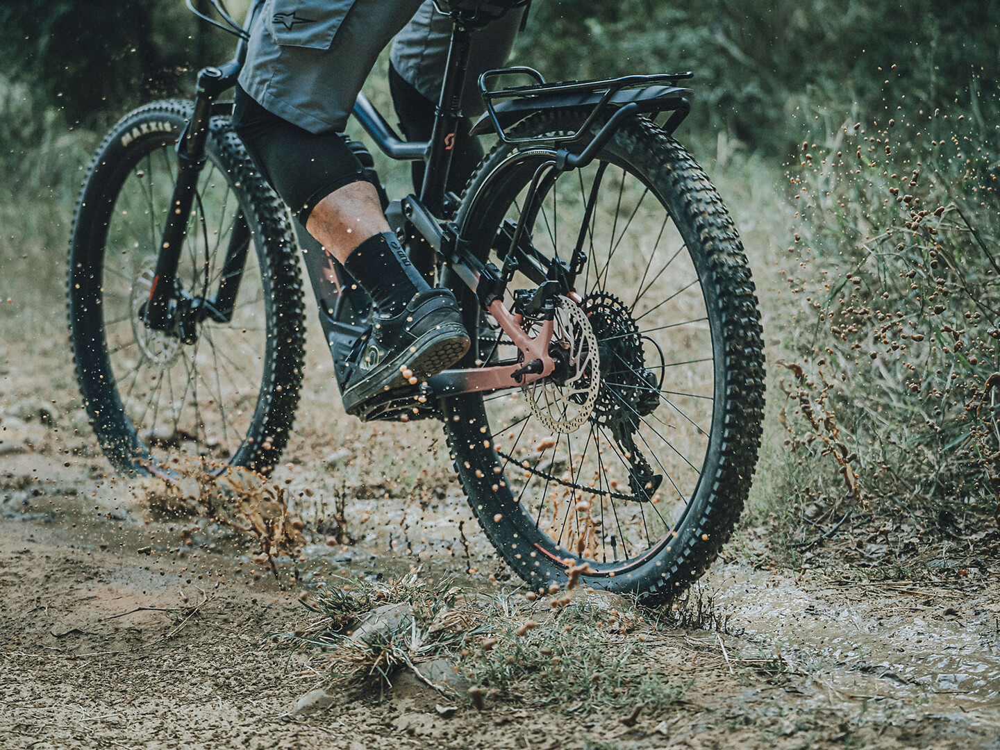

Uudet nettisivut
Upouudet nettisivut ovat julkaistu! Uudet sivut toimivat tehokkaammin kaikissa laitteissa. Jos olet nostalginen johonkin vanhempaan – tule liikkeeseemme kokemaan vanhanajan fillariliikkeen fiilis!

Ajankohtaiset tiedotteet ja uutiset Vuosaaren Pyörähuollolta.
Upouudet nettisivut ovat julkaistu! Uudet sivut toimivat tehokkaammin kaikissa laitteissa. Jos olet nostalginen johonkin vanhempaan – tule liikkeeseemme kokemaan vanhanajan fillariliikkeen fiilis!
Ilta-Sanomat teki jutun Vuosaaren Pyörähuollosta ja pyöräilykauden alkamisesta.
Pyörähuolto kannattaa teettää nyt heti keväällä. Näin varmistat että pyöräsi on käyttökunnossa kesälle.